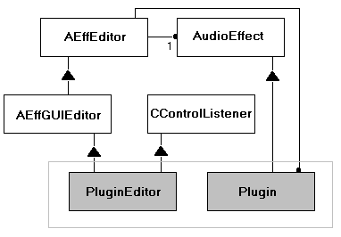

AEffGUIEditor
Up to version 2.1 :
#include <vstgui.h>
Since version 2.2 :
#include <aeffguieditor.h>
class AEffGUIEditor : public AEffEditor ;
Use this class as parent of a graphic editor instead of
AEffEditor . This class includes some pre-initialization.

Example :
/ *this allows to use this pixmap
in different instances of this plugin : */
static CBitmap *background = 0;
MyEditor::ControlsguiEditor (AudioEffect *effect)
: AEffGUIEditor (effect)
{
frame = 0;
rect.left = 0;
rect.top = 0;
rect.right = kBackgroundW;
rect.bottom = kBackgroundH;
/ *we decide in this plugin to open all
bitmaps in the open function */
}
virtual ~AEffGUIEditor ();
virtual void setParameter (long index, float value);
Called from the AEffect to update
the control's value.
Example :
void MyEditor::setParameter (long index,
float value)
{
// test if the plug is opened
if (!frame)
return;
switch (index)
{
case kMyTag:
if (myControl)
myControl->setValue (
effect->getParameter (index)
);
if (myDisplay)
myDisplay->setValue (
effect->getParameter (index)
);
default :
break;
}
// call this to be sure
// that the graphic will be updated
postUpdate ();
}
virtual long getRect (
CRect **rect);
Gives the Rect from the plug-in which states where its window should appear, and
how large it should be.
virtual long open (void *ptr);
Host is about to open a window for the editor.
Note :
Allways call this method from your own editor.
Example :
long MyEditor::open (void *ptr)
AEffGUIEditor::open (ptr);
/ *init the background pixmap
(a global pixmap for
all instance of this plugin) */
if (!myBackground)
myBackground = new CBitmap (
kBackgroundPixmapID
);
else
myBackground->remember ();
...
}
See also :
virtual void idle ();
Example :
void MyEditor::idle ()
{
// always call this to ensure update
AEffGUIEditor::idle ();
...
}
virtual void draw (
ERect *rect);
void wait (unsigned long ms);
Wait.
ms |
The number of milliseconds to wait. |
long getTicks ();
Gets the current time (in ms).
void doIdleStuff ();
Feedback to the host application and to call the idle's function of this editor
(thru host application (MAC/WINDOWS/MOTIF)). The idle frequency is between 10Hz
and 20Hz.
Gets the audio effect attached to this editor.
long getVstGuiVersion ();
Gets the version of this VSTGUI.
return |
The major version in the most significant 16 bits, the minor version in the
less significant 16 bits. |
Example :
int version = getVstGuiVersion ();
int verMaj = (version & 0xFF00) >> 16;
int verMin = (version & 0x00FF);
virtual long setKnobMode (int val);
Sets the knob mode.
val |
kCircularMode |
kRelativCircularMode |
kLinearMode |
|
static long getKnobMode ();
Gets the knob mode.
return |
kCircularMode |
kRelativCircularMode |
kLinearMode |
|
virtual bool onWheel (float distance);
Should be called if you want to dispatch this info.
Example :
long MyPlugEffectX::vendorSpecific (long lArg1,
long lArg2, void *ptrArg, float floatArg)
{
if (editor && lArg1 == 'stCA' && lArg2 == 'Whee')
return editor->onWheel (floatArg)
== true ? 1 : 0;
else
return AudioEffectX::vendorSpecific (
lArg1, lArg2, ptrArg, floatArg
);
}
Should be called if you want to dispatch this info.
Returns 1 if the event is caught, -1 otherwise.
Should be called if you want to dispatch this info.
Returns 1 if the event is caught, -1 otherwise.
Last Modified: